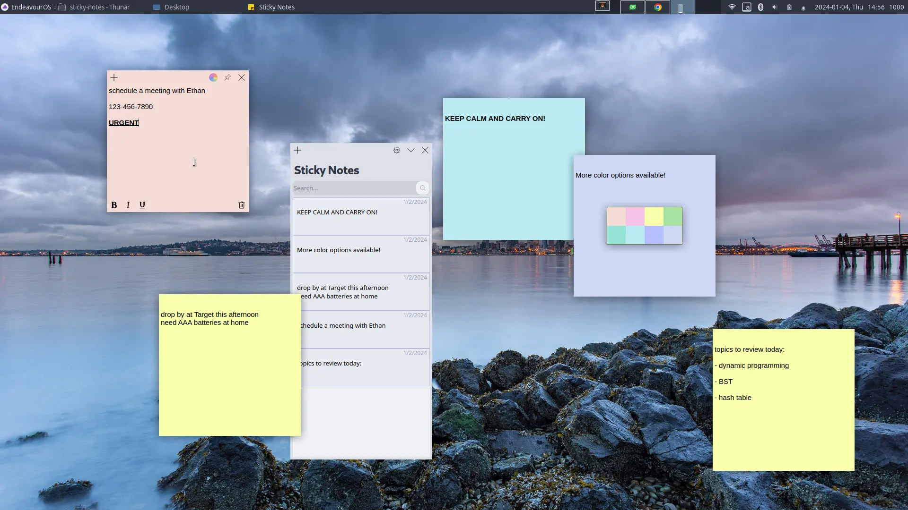
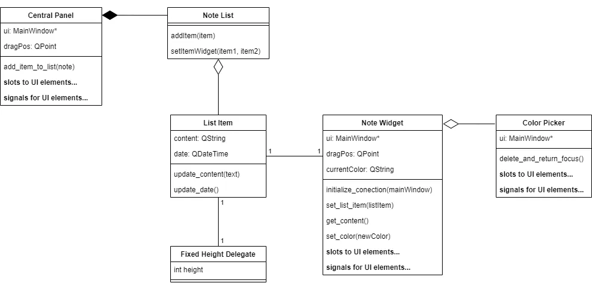
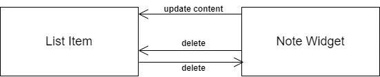

introduction
Sticky notes is a practice project I wrote from scratch after I learned the basics of the Qt framework. I decided to do this project because I quite like the sticky notes application that comes with Windows 11, but I couldn't find a similar application for my old laptop running Linux with Xfce-4 desktop. Therefore, I wrote my own sticky notes application! Most parts of the project are finished, but there are a few extensions that I will discuss below.
Sticky notes running on my Xfce-4 desktop:
overview
This application consists of two parts:
- A central panel where you can view and manage all the active notes.
- Individual notes.
The design is very much like the sticky notes application on Windows 11. The user first start the central panel, then from the central panel the user can create new sticky notes. Each sticky note supports the following key functionalities:
- Font manipulation: text can be made italic, bold, and underlined.
- Color palette: the background color can be changed to one of eight preconfigured colors at any time.
- Always on top: even without focus, the sticky note can appear above other windows. This functionality can be toggled.
details
The UML diagram below shows the structural design of the application. Note that fields and methods related to UI elements (buttons, frames, etc.) are not shown.
Please note the design choices I took to make the project better structured. The central panel is only responsible for the UI (i.e. the view) of the application, all the functionality implementations (i.e. the controls) are separated into a class called Note List. This class manages all the active notes.
A list item is an item that appears on the central panel. Each list item is uniquely associated to a note widget. A note widget and its associated list item are coupled through the signal-and-slot mechanism of Qt (an event system, similar to that of JavaScript in terms of concepts). The diagram below shows part of the coupling.
Every time the user modifies the content of a note widget, a signal is sent to the associated list item, and its slot responds by updating its content accordingly. When the user deletes a note widget, a signal is sent to the associated list item, which responds by deleting itself. Similarly, when the user deletes a list item, the associated note widget responds by deleting itself. Note this is simplified, in my application there is also user confirmation involved.
The color picker instance is only constructed when the user clicks on the color palette button on the note widget. When the color picker shows up, the UI on the note widget is automatically hidden. When the user has picked a new color, the color picker is automatically hidden (and destructed) and the UI on the note widget returns. This creates a clean and intuitive user experience.
Finally, the Fixed Height Delegate class is an auxiliary class that gives a fixed height to each list item.
key features
Below are some key features I have implemented for this application:
- New note widgets can be created from both the central panel and other note widgets. This makes it a lot simpler to create a new note widget when the central panel is minimized.
- Manage all the active note widgets in the central panel.
- If a note widget does not have focus, its UI is automatically hidden. This creates a much cleaner look especially when many note widgets are open.
- The text font in a note widget can be modified (italic, bold, and underline).
- The background color of a note widget can be changed to one of eight preconfigured colors at any time. (Windows 11 sticky notes application did not implement this!)
- Pin a note widget on top of other windows. This makes reference easy.
Below is a short gif demonstrating these features.
possible extensions
Some extensions I'm considering implementing:
- Sqlite integration. Before the application is closed, automatically save all the active notes to a Sqlite database.
- Search for note content.
- Basic settings (e.g. skip dialog before deleting, open all notes from last time at startup, etc.) that can be changed in the central panel.